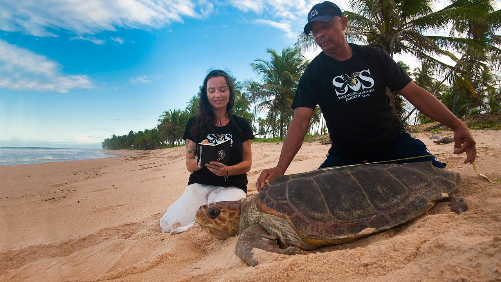
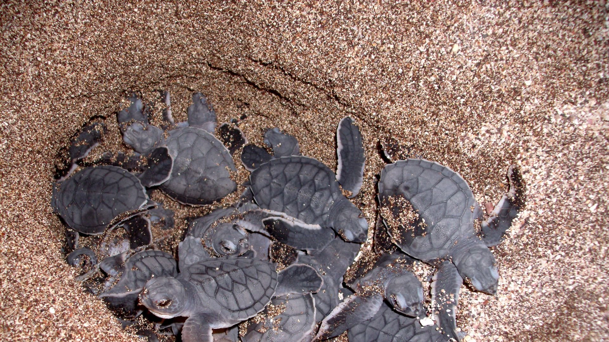
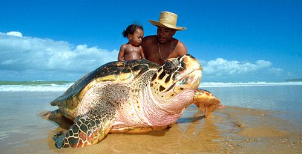
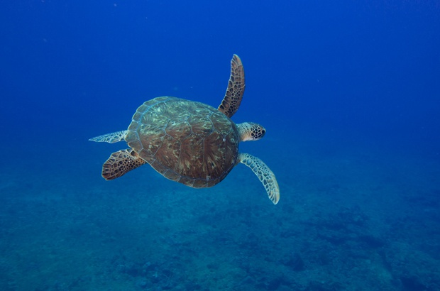

https://www.tamar.org.br

https://tamar.org.br/noticia1.php?cod=88
 https://www.agazeta.com.br/capixapedia/ilha-do-es-e-principal-area-de-desova-da-tartaruga-verde-no-brasil-0522
https://www.agazeta.com.br/capixapedia/ilha-do-es-e-principal-area-de-desova-da-tartaruga-verde-no-brasil-0522
 https://tribunadonorte.com.br/natal/desova-de-tartarugas-esta-em-risco/
https://tribunadonorte.com.br/natal/desova-de-tartarugas-esta-em-risco/

https://www.tamar.org.br/interna.php?cod=165

https://www.tamar.org.br/noticia1_ing.php?cod=830